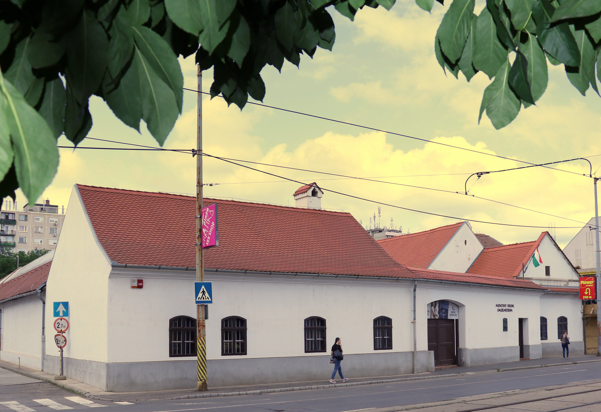

A Debreceni Irodalom Háza története
A Déri Múzeum kezdetben nem tartott fent külön irodalomtörténeti gyűjteményt. A bekerülő dokumentumokat a Történeti és a Néprajzi Adattárban tartották nyilván, vagy a múzeum könyvtárában helyezték el. A múzeum megnyitása után emlékszobákban mutatták be a legnagyobb debreceni írókat, 1943-ban Oláh Gábor, 1947-ben Ady Endre, 1949-ben Csokonai és Fazekas kapott kiállítóhelyet a múzeumban. Az 1950-es évek végén, szinte a Petőfi Irodalmi Múzeum alakulásával egy időben kezdődött az irodalmi-muzeológusi tevékenység ebben a gyűjteményben is. Julow Viktor a Déri Múzeum munkatársaként leírta, kutatta, kiállította és tudományos publikációkban közzé is tette a legértékesebb irodalmi ritkaságokat. Az ő muzeológusi tevékenysége idején az irodalmi gyűjtemény még nem vált önálló nyilvántartási egységgé. Julow Viktor távozása után irodalomtörténész-muzeológus nélkül maradt az anyag. A gyűjteményi nyilvántartás, a gyarapítás és a megóvás is teljesen leállt.
Az 1960-as évek elején az irodalomtörténeti jelentőségű autográfiákat, dokumentumokat kiemelték eredeti helyükről és irodalmi gyűjteményt hoztak létre belőlük, melyet a Csokonai Kör szekrényében őriztek. Kilián István ezt az anyagot kapta meg 1972-ben, mikor a miskolci múzeumból Debrecenbe került irodalomtörténész-muzeológusnak, és tapasztalt múzeumi szakemberként megkezdte az addig felgyűlt anyag rendezését. A kiemelt gyűjteményi rész, ami az irodalmi gyűjtemény törzsanyaga lett, új leltári számot kapott.
Teljes értékű nyilvántartási egységként a Déri Múzeum Irodalmi Gyűjteménye 1973-tól létezik. Külön tarjuk nyilván az eredeti kéziratokat, külön az irodalmi dokumentumokat (nyomtatványok, másolatok, fényképek), és tárgyi emlékek (bútorok, relikviák) és külön az irodalmi vonatkozású képzőművészeti alkotásokat, illusztrációkat.
Irodalmi múzeum, állandó irodalmi kiállítás létesítésének gondolata évtizedek óta foglalkoztatta Debrecen irodalomszerető közönségét és a szakembereket. A város páratlanul gazdag irodalmi múltját valamikor emlékszobák és iskolai kiállítások mellett időszaki kiállítások idézték. Az emlékszobák korszerűtlenekké, az iskolai bemutatók zártakká, a szélesebb közönség számára hozzáférhetetlenekké váltak. Az időszaki kiállítások többnyire csak egy-egy nagy egyéniség bemutatására vállalkoztak és vállalkoznak. A Református Kollégium kiállításaiból ugyan megismerheti az érdeklődő a nagy hagyományú iskola híres tanárait és diákjait, de a város ötödfélszáz éves irodalomtörténetéről ott sem kap átfogó képet. Ezt a hiányt igyekezett pótolni a Debreceni Irodalmi Múzeum, amely a Déri Múzeum irodalmi anyagára alapozva állandó kiállítás formájában igyekezett bemutatni azokat a kapcsolatokat, amelyek a Tiszántúl szellemi központját évszázadokon keresztül a magyar irodalom fejlődéséhez fűzték. A kiállítás 1980-ban nyílt meg Borsos József neves debreceni építész lakóházában, amely 1913-ban épül.
2011-ben az irodalmi gyűjteménynek ki kellett költöznie a villából. Az új állandó irodalmi kiállítás csak 2014-tól várja a látogatókat a Péterfia utcai Debreceni Irodalom Házában. Itt találhatók a gyűjteményeink is.
Kontakt
Weboldal: https://www.derimuzeum.hu/irodalomhaza/
Email: irodalomhaza@derimuzeum.hu